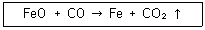
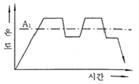
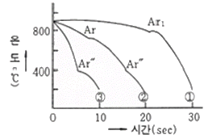
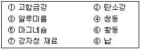

금속재료산업기사 (2009-03-01 기출문제)
1과목: 금속재료
1. 다음 중 용융점이 가장 낮은 금속은?
- Fe
- Hg
- W
- Cu
(정답률: 96%)

2. 탄소강 중 인(P)의 영향을 설명한 것으로 옳은 것은?
- 적열취성의 원인이 된다.
- 고스트라인을 형성한다.
- 결정립을 미세화 시킨다.
- 강도, 경도, 탄성한도 등을 높인다.
(정답률: 59%)
3. 다음 중 베어링용 합금이 갖추어야 할 조건으로 틀린 것은?
- 마찰 계수가 클 것
- 소착에 대한 저항력이 클 것
- 경도와 내압력이 클 것
- 점성과 인성이 있을 것
(정답률: 53%)
4. 황동이나 청동에 비해 강도, 경도, 인성, 내마모성, 내피로성 등의 기계적 성질 및 내열, 내식성이 좋아 선박, 항공기, 자동차 등의 부품용으로 사용되며, Novostone이라고 불리우는 특수청동은?
- 인청동(phospjor broze)
- 연청동(lead broze)
- 알루미늄청동(aluminimum broze)
- 규소청동(silicon broze)
(정답률: 73%)
5. 다음 제진재료나 제진합금에 대한 설명 중 틀린것은?
- 제진성능은 외부 마찰에 기인한다.
- 제진합금은 감쇠능을 겸비하여야 한다.
- 대표적 합금으로는 Mg-Zr, Mn-Cu 등이 있다.
- 제진이란 진동발생원인 고체의 진동자를 감소시키는 것을 말한다.
(정답률: 54%)
6. 오스테나이트 스테인리스강의 입계부식에 대한 방지 대책이 아닌 것은?
- 음극방식을 한다.
- 고용화 열처리를 한다.
- 탄소가 낮은 재료를 선택한다.
- Ti, Nb 등이 첨가된 재료를 선택한다.
(정답률: 33%)
7. 코발트의 자기변태점은 약 몇 ℃ 인가?
- 368
- 768
- 1150
- 1550
(정답률: 57%)
8. 금속을 냉간가공한 재료의 특징을 설명한 것 중 틀린 것은?
- 전위밀도가 증가하여 강도가 커지며, 경화도는 FCC보다 BCC에서 크다.
- 적층결함에너지가 낮은 오스테나이트애서는 적층 결함이 생기기 쉬우므로 경화가 높아진다.
- 냉간가공으로 생긴 잔류응력은 회복 및 재결정으로 감소하고, 450℃ 이상의 가열로 급속히 감소한다.
- 청열취성 온도 구간에서의 온간가공은 전위밀도의 현저한 증가를 일으켜 강도가 상승한다.
(정답률: 30%)
9. 다음 중 황동의 종류가 아닌 것은?
- 톰백(Tombac)
- 하스텔로이 에이(Hastelloy A)
- 길딩 메탈(Gilding Metal)
- 카트리지 브라스(Cartridge brass)
(정답률: 53%)
10. 다음 중 쾌삭강에 대한 설명으로 틀린 것은?
- Ca 쾌삭강은 제강시에 Ca을 탈산제로 사용한다.
- 일반적인 쾌삭강은 공구 수명의 연장, 마무리면 정밀도에 기여한다.
- S 쾌삭강은 Mn을 0.4~1.5% 첨가하여 MnS으로 하고 이것을 분사시켜 피삭성을 증가시킨다.
- Pb 쾌삭강에서는 Pb가 Fe중에 고용되므로 chip breaker의 역할과 윤활제의 작용을 한다.
(정답률: 72%)
11. 금속을 용융상태에서 초고속 급냉에 의해 제조되는 재료로 결정이 되어 있지 않은 상태이며, 인장강도와 경도를 크게 개선시킨 합금은?
- 수소저장용합금
- 비정질합금
- 형상기억합금
- 섬유강화합금
(정답률: 70%)
12. 다음 중 합금이 순금속 보다 좋은 성질은?
- 가단성
- 열전도율
- 전기전도율
- 경도 및 강도
(정답률: 83%)
13. 다음 중 니켈 합금이 아닌 것은?
- 인바
- 엘린바
- 포금
- 플래티나이트
(정답률: 79%)
14. 제철 중 일어나는 보기와 같은 반응과 관련된설명으로 옳은 것은?

- CO가스에 의한 Fe의 간접환원 반응이다.
- CO2가스에 의한 Fe의 직접환원 반응이다.
- 용광로의 로저에서 일어나는 반응이다.
- 제철 중 약 15% 정도만 반응한다.
(정답률: 60%)
15. 미끄럼(slip) 변형에 대한 설명으로 틀린 것은?
- 소성변형이 증가되면 강도도 증가한다.
- Slip 방향은 원자 간격이 가장작은 방향이다.
- Slip 선은 변형이 진행됨에 따라 그 수가 적어진다.
- 금속의 결정에 외력이 가하여지면 슬립 또는 쌍정을 일으켜 변형한다.
(정답률: 43%)
16. 다이캐스팅용으로 쓰이는 아연합금의 원소에 대한 설명으로 틀린 것은?
- Al은 유동성을 개선한다.
- Cu는 입간부식을 억제한다.
- Li은 길이변화에 큰 영향을 준다.
- Mg을 많이 첨가하면 복잡한 형상주조에 좋다.
(정답률: 62%)
17. 다음 중 연성이나 전성이 가장 우수한 결정구조는?
- BCC
- BCT
- FCC
- HCP
(정답률: 74%)
18. 탄소가 0.30%, 규소가 0.15% 함유된 주철의 탄소당량은? (단, P는 무시한다.)
- 0.35%
- 0.45%
- 0.55%
- 0.65%
(정답률: 35%)
19. 다음 중 수소저장합금의 설명으로 옳지 않은 것은?
- 수소가스와 반응하여 금속수소화물이 된다.
- 수소의 흡장 방출을 되풀이 하는 재료는 분화하게 된다.
- 합금이 수소를 흡장할 때는 팽창하고, 방출할 때는 수축한다.
- 수소가 방출되면 금속수소화물은 원래의 수소저장합금으로 되돌아가지 않는다.
(정답률: 60%)
20. 분말야금법의 특징을 설명한 것으로 옳은 것은?
- 절삭공정은 생략할 수 없다.
- 다공질의 금속재료를 만들 수 있다.
- 제조과정에서 용융점까지 온도를 올려야한다.
- 필터나 함유베어링 등에 적용할 수 없다.
(정답률: 65%)
2과목: 금속조직
21. 정삼각형의 각 정점으로부터 대변에 평형으로 10 또는 100 등분하고, 삼각형내의 어느 점의 농도를 알려면 그 점으로부터 대변에 내린 수선의 길이를 읽어 표시하는 3원 합금의 농도 표시방법은?
- Gibbs의 삼각법
- Cottrell법
- Lever reltion법
- Roozeboom의 삼각법
(정답률: 86%)
22. 다음 중 브라베이스(bravais) 격자에 대한 설명으로 틀린 것은?
- 입방정계 : a=b=c, α=β=γ=90°
- 정방정계 : a=b≠c, α=β=γ=90°
- 사방정계 : a≠b≠c, α=β=γ=90°
- 단사정계 : a≠b≠c, α≠β≠γ≠90°
(정답률: 53%)
23. 원자배열이 어느 축을 경계로 하여 규칙적으로 되어 있으나 서로 반대의 배열을 갖는 것을 무엇이하고 하는가?
- 완화현상
- 역위상
- 협동협상
- 초격자
(정답률: 83%)
24. Zn, Mg, Co, Be 등이 상온에서 갖는 결정구조는?
- CPH
- FCC
- BCC
- BCT
(정답률: 49%)
25. 다음 중 금속 화합물의 특성으로 틀린 것은?
- 전기저항이 크다.
- 규칙 불규칙 변태가 없다.
- 소성변형이 용이하다.
- 성분금속의 특성을 소실한다.
(정답률: 25%)
26. 고체금속에서 극히 저온인 경우 100% 규칙성을 나타낸다고 한다. 이 때의 규칙도(degree of order)는?
- 0
- 1/2
- 1
- ∞
(정답률: 46%)
27. BCC나 FCC금속이 응고할 때 결정이 성장하는 우선 방향은?
- (100)
- (110)
- (111)
- (1010)
(정답률: 56%)
28. 다음 중 점결함에 해당하지 않는 것은?
- 전위
- 쇼트키 결함
- 프렌켈 결함
- 침입형 원자
(정답률: 70%)
29. 체심입방격자(BCC) 금속의 슬립방향으로 옳은 것은?
- (111)
- (110)
- (010)
- (211)
(정답률: 60%)
30. 확산은 관여하는 원자의 종류 또는 이동하는 원자의 확산로에 따라 분류할 때 이동하는 원자의 확산로에 따른 분류에 해당되는 것은?
- 자기확산
- 상호확산
- 입계확산
- 반응확산
(정답률: 44%)
31. Fe-C 상태도에서 공석점의 탄소는 약 몇 % 인가?
- 0.025
- 0.80
- 2.1
- 4.3
(정답률: 65%)
32. 다음 중 고용체 강화에 대한 설명을 틀린 것은?
- 일반적으로 용매원자의 격자에 용질원자가 고용되면 순금속보다 강한 합금이 되는 것이 고용체강화이다.
- 용매원자와 용질원자 사이의 원자 크기의 차이가 적을수록 강화효과는 커진다.
- 용질원자에 의한 응력장과 가동 전위의 응력장이 상호작용을 하여 재료를 강화하는 방법이다.
- Cu-Ni합금에서 구리의 강도는 60%Ni이 첨가될 때까지 증가되는 반면 니켈은 40%Cu가 첨가될 때 고용체강화가 된다.
(정답률: 55%)
33. L(융액) ⇆ A(고상) + L'(융액)의 반응은?
- 공정반응
- 공석반응
- 편정반응
- 전율고용체반응
(정답률: 72%)
34. 전율고용체형 상태도를 나태내는 합금은?
- Cu-Ni
- Ag-Si
- Co-Cu
- Pb-Zn
(정답률: 69%)
35. 금속의 동소 또는 자기 변태점에서 일어나는 현상이 아닌 것은?
- 자기적 성질이 변한다.
- 결정구조가 변한다.
- 격자상수가 변한다.
- 함유하고 있는 원소량과 무게가 변한다.
(정답률: 68%)
36. 다음 결함 중 반데르발스의 힘에 의한 결함은?
- 이온결합
- 공유결함
- 분자결합
- 금속결함
(정답률: 47%)
37. 커켄덜(kirkendall) 실험결과는 확산현상이 어떤 기구에 의해 진행됨을 나타내는가?
- 체적결함 기구
- 적층결함기구
- 공공기구
- 결정립 경계기구
(정답률: 55%)
38. 다음 중 전위에 대한 설명으로 틀린 것은?
- 칼날전위는 슬립 방향에 평행하게 움직인다.
- 나사전위는 슬립 방향에 평행하게 움직인다.
- 순수한 나사전위에서는 전위선과 버거스 벡터가 평행이다.
- 순수한 칼날전위에서는 전위선과 버거스 벡터가 수직이다.
(정답률: 30%)
39. 응용금속이 주형의 표면에서 내부로 빨리 응고할 때 조직의 변화가 순서대로 옳게 나열된 것은?
- Chill층(미세한 등축정)→주상정→등축정
- 주상정→Chill층(미세한 등축정)→등축정
- 등축정→Chill층(미세한 등축정)→주상정
- 등축정→주상정→Chill층(미세한 등축정)
(정답률: 58%)
40. 탄소강의 조직에서 경도값(HB)이 가장 작은 것은?
- α고용체
- γ고용체
- 시멘타이트
- 펄라이트
(정답률: 64%)
3과목: 금속열처리
41. 황동제품의 내부응력을 제거하고 시기균열(season crack)을 방지하기 위한 열처리 온도와 방법이 옳은 것은?
- 약 50℃에서 1시간 템퍼링 한다.
- 약 200℃에서 1시간 템퍼링 한다.
- 약 300℃에서 1시간 어닐링 한다.
- 약 450℃에서 1시간 어닐링 한다.
(정답률: 64%)
42. 강재의 부품표면에 질소를 확산 침투시키는 질화법의 종류가 아닌 것은?
- 가스 질화법
- 액체 질화법
- 이온 질화법
- 용융 질화법
(정답률: 63%)
43. 금속재료를 진공 중에서 가열하면 합금원소가 증발한다. 다음 중 증기압이 높아 가장 증발하기 쉬운 금속은?
- Mo
- Cr
- C
- W
(정답률: 42%)
44. 다음 중 냉각 능력이 가장 좋은 것은?
- 염수
- 물
- 기름
- 공기
(정답률: 74%)
45. 0.4% 탄소강의 최고 담금질 경도(HRC)는 얼마인가?
- 30
- 40
- 50
- 60
(정답률: 52%)
46. 진공 중에서 가열하는 진공열처리에 대한 설명으로 틀린 것은?
- 무공해로 작업 환경이 양호하다.
- 정확한 온도 및 가열 분위기에 의해 고품질의 열처리가 가능하다.
- 가열이 복사에 의해 이루어지므로 가열속도가 빠르다.
- 로벽으로부터의 방열, 로벽에 의한 손실 열량이 적기 때문에 에너지 절감 효과가 크다.
(정답률: 55%)
47. 고주파 담금질시 발생되기 쉬운 결함의 종류가 아닌 것은?
- 심냉균열
- 담금질 균열
- 연화밴드
- 피시 스케일
(정답률: 27%)
48. 침탕용 강이 구비해야 할 조건을 설명 한 것 중 틀린 것은?
- 침탄 퀜칭 경화 후 심부의 인성을 유지하기 위해서는 고탄소강이어야 한다.
- 침탄처리 가열에 의해 결정립의 조대화를 일으키지 않아야 한다.
- 경화층은 경도는 높고, 내마모성, 내피로성이 유지되어야한다.
- 강재를 주조할 때에는 강의 내부에 기포 또는 균열 등의 결함이 없어야 한다.
(정답률: 66%)
49. 풀림(annealing)의 목적을 설명한 것으로 옳은 것은?
- 강의 경도를 증가시키고 인성을 부여한다.
- 재료를 연하게 하고 내부응력을 제거시킨다.
- 내부에 응력을 향상시켜 경화시키는 효과가있다
- 결정조직을 미세화하고 재료를 표준화시키는 것이다.
(정답률: 73%)
50. 담금질에 사용되는 냉각제에 대한 설명 중 틀린것은?
- 물은 40℃ 이하가 좋다.
- 냉각제에는 물, 기름, 소금물 등이 있다.
- 증기막을 형성할 수 있도록 교반 또는 NaCl, CaCl2 등의 첨가제를 첨가한다.
- 기름은 상온 담금질일 경우 60~80℃ 정도가 좋다.
(정답률: 68%)
51. 침탄 부품에 나타나는 결함의 원인 중 탄소량의 농도가 알맞지 않아 박리가 일어났을 때의 대책으로 옳은 것은?
- 심냉처리를 한다.
- 확산풀림을 한다.
- 강력한 침탄제를 사용한다.
- 분수 냉각이나 염수 냉각을 행한다.
(정답률: 45%)
52. 철강표면에 Zn을 확산 침투시키는 방법으로 300mesh 정도의 Zn 분말 속에 제품을 넣고 300~420℃로 1~5시간 가열하여 0.015mm의 경화층을 얻는 금속 침투법은?
- 패턴팅(patenting)
- 칼로이징(calorizing)
- 크로마이징(chromizing)
- 새라다이징(sheradizing)
(정답률: 68%)
53. 철강을 560℃ 이상의 온도에서 산화시켰을 때 철과 공기가 만나는 최후의 산화피막은?
- Fe2O3
- Fe3P
- Fe3O4
- Fe3O5
(정답률: 59%)
54. 다음 중 고속도강의 뜨임 온도는 약 몇 ℃인가?
- 150~210℃
- 300~360℃
- 550~610℃
- 800~860℃
(정답률: 60%)
55. 그림과 같은 구상화 어닐링 방법에서 A1변태점 이상으로 가열하는 이유는?

- Fe3C를 분리 및 생성시키기 위하여
- 망상 Fe3C를 없애기 위하여
- 층상 Fe3C를 석출시키기 위하여
- 펄라이트를 생성 및 구상화시키기 위하여
(정답률: 69%)
56. 가스 침탄을 하려고 할 때 원료가스로서 적합하지않은 것은?
- 부탄가스
- 아르곤가스
- 천연가스
- 프로판가스
(정답률: 65%)
57. 담금질한 공석강의 냉각곡선에 나타난 1~3의 조직명으로 옳은 것은?

- ①펄라이트, ②마텐자이트+펄라이트, ③마텐자이트
- ①마텐자이트, ②마텐자이트+펄라이트, ③펄라이트
- ①마텐자이트+펄라이트, ②마텐자이트, ③펄라이트
- ①펄라이트, ②마텐자이트, 마텐자이트 + ③펄라이트
(정답률: 48%)
58. 담금질 균열의 방지대책에 대한 설명으로 틀린것은?
- Ms~Mr 범위에서 가급적 급냉을 한다.
- 살두께의 차이와 급변을 가급적 줄인다.
- 시간 담금질을 채용하거나 날카로운 모서리 부분을 라운딩(R) 처리하여 준다.
- 냉각시 온도의 불균일을 적게 하며, 가급적 변태도 동시에 일어나게 한다.
(정답률: 66%)
59. 주조용 알루미늄 합금에 널리 적용되는 열처리 방법으로 고온 가공에서 냉각 후 인공 시효 경화 처리한 것의 기호로 옳은 것은?
- T2
- T4
- T5
- T6
(정답률: 42%)
60. 다음 주철 중 편상의 흑연을 가진 주철은?
- 백주철
- 회주철
- 가단주철
- 구상흑연주철
(정답률: 43%)
4과목: 재료시험
61. 다음 중 충격시험의 목적으로 옳은 것은?
- 경도와 강도를 알기 위하여
- 연성과 전성을 알기 위하여
- 인성과 전성을 알기 위하여
- 인성과 취성을 알기 위하여
(정답률: 65%)
62. 금속 원소에 대한 격자간 거리와 구조를 결정하기 위한 결정격자 측정법에 이용되는 시험은?
- 자력 측정시험
- 커핑 시험
- X선 회절 시험
- 에릭슨 시험
(정답률: 70%)
63. 노치 효과에 대한 설명으로 옳은 것은?
- 노치계수(β)는 1보다 작다.
- 형상계수(α)는 노치계수(β)보다 크다.
- 노치에 둔한 재료에서는 노치민감계수(η)가 0(zero)에 접근한다.
- 노치민감계수의 값은 노치에 민감하면 0이 되고, 둔하면 1이 된다.
(정답률: 65%)
64. 시험하중 0.5kgf으로 마이크로 비커즈 경도 시험한 결과 시편에 형성 누르개 자국의 대각선 길이가 100μm이었다면 비커즈 경도 값은? (단, 압입자의 대면각은 136°이다)
- 92.7
- 185.4
- 262.7
- 358.4
(정답률: 29%)
65. 보기에서 자분탐상검사가 가능한 것들로 짝지어진 것은?

- 1, 2, 7
- 2, 3, 6
- 4, 5, 8,
- 3, 4, 8
(정답률: 77%)
66. 사업장의 안전점검을 하기 위한 체크리스트 작성시 유의사항으로 틀린 것은?
- 사업장에 적합한 독자적인 내용일 것
- 일정양식을 정하여 점검대상을 정할 것
- 점검표의 내용은 이해하기 쉽도록 표현하고 구체적일 것
- 위험성이 낮은 순이나 긴급을 요하지 않는 순으로 작성할 것
(정답률: 79%)
67. 10이하의 확대경을 이용한 파면검사에서 알 수 없는 것은?
- 내부결함 유무
- 결정격자의 종류
- 침탄, 탈탄 심도
- 육안에 의한 조직
(정답률: 45%)
68. 누설탐상시험에서 가스와 접촉에 의해 화학반응을 일으켜 독특한 색깔을 띄게 하고, 독특한 냄새가 나고 증기 비중이 약 0.59인 추적자 가스는?
- 헬륨
- 암모니아
- 메탄
- 이산화탄소
(정답률: 67%)
69. 금속의 화학성분을 검사하기 위한 방법이 아닌것은?
- 습식분석시험
- 분광분석시험
- 원자흡광시험
- 크리프시험
(정답률: 83%)
70. 금속조직 시험을 하기 전에 시험편의 준비순서로 옳은 것은?
- 시험편 채취→마운팅→폴리싱→세척→부식
- 시험편 채취→폴리싱→마운팅→게척→부식
- 마운팅→시험편 채취→부식→세척→부식
- 마운팅→시험편 채취→폴리싱→부식→세척
(정답률: 75%)
71. 내마모성을 좌우하는 인자와 관련이 가장 적은 것은?
- 응착성
- 화학적 안정성
- 열전도성
- 부피와 무게
(정답률: 49%)
72. 설퍼 프린트(sulfur print)는 철강 재료의 무엇을 알기 위한 실험인가?
- 탄소의 분포상태와 편석
- 규소의 분포상태와 편석
- 망간의 분포상태와 편석
- 황의 분포상태와 편석
(정답률: 79%)
73. 초음파탐상시험에서 잡음 에코를 없애는 것으로서 일정 높이 이하의 잡음을 제거하는 역할을 하는 것은?
- 리젝션
- 필터
- 동조회로
- 검파정류회로
(정답률: 46%)
74. KS B 0804의 금속재료 굽힘 시험에 사용되는 직사각형의 시험편의 모서리 부분은 반지름이 시험편 두께의 얼마를 넘지 않도록 라운딩 하여야 하는가?
- 1/2
- 1/3
- 1/5
- 1/10
(정답률: 66%)
75. 유화제를 포함하는 기름상태의 물질로 물에 씻음으로써 세척할 수 있는 침투액은?
- 수세성 침투액
- 이원성 침투액
- 후유와성 침투액
- 용제제거성 침투액
(정답률: 54%)
76. 다음 중 인장강도의 단위로 옳은 것은?
- N/mm2
- m/mm2
- gr/mm3
- ton/mm3
(정답률: 78%)
77. 현미경조직 검사시의 연마제로 잘못 연결된 것은?
- 비철 및 합금 : Al2O3, MgO
- 철강재 : Fe2O3, Cr2O3, Al2O3
- 초경합금 : 다이아몬드 페이스트
- 구리, 황동, 청동 : 염화제이철
(정답률: 34%)
78. 불꽃시험에 있어서 불꽃의 파열이 가장 많은 강은?
- 0.15% 탄소강
- 0.25% 탄소강
- 0.40% 탄소강
- 0.55% 탄소강
(정답률: 73%)
79. 방사선투과시험에서 필름에 안개현상이 나타나는 원인이 아닌 것은?
- 필름의 입상이 너무 조대하기 때문에
- 암실 내에 스며드는 빛이 있기 때문에
- 증감지와 필름이 밀착되어 있지 않기 때문에
- 시편-필름간 간격이 너무 떨어져 있기 때문에
(정답률: 40%)
80. U형 노치의 충격시험편에 해머의 무게 30kgf, 팔의 길이가 85cm인 샤르피 충격 시험기를 가지고 충격 시험한 결과 α각도가 67°, β각도가 57° 였을 때 충격에너지는 약 몇 kgf∙m인가? (단, α는 해머의 들어올린 각도, β는 시험편 파단 후에 해머가 올라간 각도이다.)
- 2.29
- 3.92
- 6.29
- 9.92
(정답률: 49%)